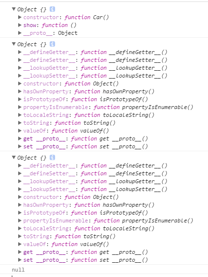
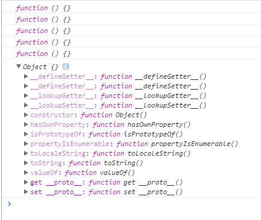

随着ES2015（下面都用其别名ES6代替）的诞生，js的标准内定义一个类的语法和一些常见的面向对象的语言类似了，有了class后，js的面向对象写法更加清晰，方便。
在ES5的时候，最常用到的定义类及其属性、方法的语法应该是下面这种：
function Car() {
this.name = 'BMW';
}
Person.prototype.show = function () {
alert(this.name);
}
var aCar = new Car();
这种写法，使得一个类看起来很散乱，没有整体的一个类的感觉。
而在ES6中定义一个类的基本语法是这样的：
Class Person {
constructor() {
this.name = 'eason';
this.sex = 'male';
}
show() {
console.log('hi');
}
}
let aMan = new Person();
这里有几个语法上的点需要注意：
- 类名后面不要加括号
- 类内部的constructor用来定义类内部的属性，如果没有显式的写入constructor，那么系统会自动加入一个空的constructor，这是必须的，因为在实例化的时候需要用到这个函数。
- 类内的所有方法的定义不再需要用到function关键字，并且所有方法之间不能用分号隔开，否则报错。
- 实例化类的方式和以前一样。
其实ES6内的Class只是一个语法糖，就是说Class只是一个ES5定义类的语法的一个包装而已。ES6的类也有prototype等等的一些元素。
alert(typeof Person) //function
alert(Person.prototype.constructor === Person) //true
alert(Person.prototype.show) //弹出show函数的函数体
alert(aMan.name) // eason
从上面的实验可以看出几点：
- 其实类也就是一个函数对象而已，我们完全可以自己封装一个类的定义函数。
- ES6中写在类的构造函数内的属性，相当于在ES5中定义在构造函数内的属性。
- ES6中写在构造函数外的方法或者属性，相当于ES5中定义在原型上的属性方法。
- ES6的类是个语法包装。方便代码的组织，让js面向对象编程更加清晰。
下面继续ES6 class的语法
###get、set
class MyClass {
constructor() {
// ...code
}
get prop() {
return 'getter';
}
set prop(value) {
console.log('setter: '+value);
}
}
let inst = new MyClass();
inst.prop = 123;
// setter: 123
inst.prop
// 'getter'
上面类内定义了set与get方法，等价于ES5内的setter与getter，但是ES6内定义这两个方法相对直观，容易一些，ES5内定义这两种方法的具体实现可以看别人写的文章：浅谈 JS 对象添加 getter与 setter 的5种方法…..
###静态方法
就是在方法前加static关键字
class Foo {
static classMethod() {
return 'hello';
}
}
这样的方法实例是不能直接访问的，只能通过类本身来调用。但是子类是可以继承父类的静态方法的，而且super对象也可以调用静态
方法，super.staticFun()
但是es6没有静态属性的定义，但是可以通过class.prop的方法来创建，但是这样并不是理论上的静态，只是实际效果和静态是一
样的，这个es5也是支持的
function Class() {
this.one = 'one';
}
Class.prop = 'prop';
var child = new Class();
alert(Class.prop) // prop
alert(child.prop) // undefined
##继承
面向对象一个比较重要的东西就是继承，用ES6的写法可以很直观的写出类的继承，如下：
class Person {
constructor(a, b, c) {
this.age = a;
this.prop = b;
}
say() {
alert(this.age);
}
}
class Child extends Parent {
constructor(a, b, c) {
super(a, b);
this.prop = ‘prop’;
}
show() {
super.show() //调用父类的show 方法
}
}
通过extends关键字来实现es6类的继承，花括号内同时可以定义子类自己的属性方法，并且ES6的继承还可以继承内置的类，如Number，Array等，这是ES5做不到的。一个关键的地方是super函数。
super 函数是必须被调用的，否则实例化子类的时候，会出错。这是因为这是因为子类没有自己的this对象，而是继承父类的this对象，然后对其进行加工。如果不调用super方法，子类就得不到this对象。
super其实就是父类的一个实例对象也就是父类的this指针。
不过super具体是个什么东西，更深层次的概念还没弄太懂，先留个坑
但是现在可以看到，super在不同语境下面，会有不同的身份，并且不是一个普通的函数，使用上有一些注意点。
比如
class Child extends Parent {
constructor(a, b, c) {
this.prop = 'prop'; //this is not defined
super(a, b);
console.log(super); //'super' keyword unexpected here
}
show() {
console.log(super.prop) // undefined
console.log(this.prop) // 正常输出
super.show() //调用父类的show 方法
}
}
- super必须在最前面调用，否则子类的constructor函数内不存在this对象。调用super相当于执行了父类的constructor函数，得到了父类中的this。
- super作为关键字不能被直接输出。
- super内保存了父类内的方法，但是没有保存属性，属性可以通过this来调用。
##这里顺便回顾一下es5的继承
通常的做法是：
function Car() {
this.name = ‘car’;
function f() {
//…code
}
}
Car.prototype.show = function () {
alert(this.name);
}
function SportsCar() {
this.speed = '123';
}
SportsCar.prototype = new Car();
SportsCar.prototype.a = '20';
var aSportsCar = new SportsCar();
首先说一下，new操作符大概的操作过程，也就是实例化过程。
new Car() ==>
Car() {
this = {} //第一步
this.name = 'car'; //第二步
return this; //第三步
}
所以实例就是父类的this指针。通过创建this，为this赋值，然后返回这个this指针，从而实现了对父类内的属性的复制, 也很容易看出没有通过this赋值的属性方法是不会被复制到实例对象内的。然后通过
SportsCar.prototype = new Car();
把这个实例化对象又赋给了一个类的原型，实现了继承。 于是原型链就形成了，继承就完成了。
当asportCard实例调用一个属性，如，aSportCard.prop，自然先到自己内部查找， 也就等同于到其对应类内查找（SportsCar），如果找不到，这时候，一个关键的东西就出现了， __proto__ 属性。__proto__ 属性才是原型链形成的关键所在。
所有的函数，对象都有__proto__ 属性
SportsCar.prototype = new Car();
var aSportsCar = new SportsCar();
console.log(aSportsCar.__proto__=== SportsCar.prototype) //true
console.log(SportsCar.prototype.__proto__ === Car.prototype) // true
可以看出，一个实例的__proto__属性指向其对应类的原型对象，于是查找属性的过程是这样的：
先在实例本身内部查找，如果找不到就根据__proto__ 属性查找，也就是去对应类的原型上找，如果还找不到就根据这个原型的__proto__ 属性去找，一直重复直到找到或者到达原型链顶部。
比如查找aSportCard.prop， 先到aSportCard自己内部查找，再到SportsCar.prototype，这里因为继承的缘故（ SportsCar.prototype = new Car() ），查找SportsCar.prototype就相当于查找 Car类的一个实例，这里是不是又回到了之前的步骤了，在一个实例内部查找。 所以依次往下找， 无论多少次继承都是这样的模式。 这就是查找原型链， 而SportsCar.prototype = new Car() 这句话，就相当于将所有被继承类的内部属性拷贝到子类的原型上， 这样就很好说明了， 为什么基于原型继承的js，通过查找原型链的方式实现的继承，连类内部的属性也会继承下来。
还有一点就是，通过new创造出来的实例，只有__proto__ 属性，而没有prototype属性，这也是显然的，因为实例不需要也不能被继承，自然不需要带上用于继承的prototype属性。
上面还提到了原型链顶部，原型链的顶部是什么呢？
还是上面的例子，最高层的类是Car， 但是Car类的原型，并不是原型链的最高层， 不要忘了还有js的内置对象。
console.log(Car.prototype)
console.log(Car.prototype.__proto__)
console.log(Object.prototype)
console.log(Object.prototype.__proto__)
结果如下

最后的null表示结束了，也就是说，原型链的最高层是Object.prototype。
其实之前有说到__proto__ ，每个函数、对象内都有，自然不单单存在于原型对象上，类也是函数，自然也存在
//又是一系列的输出
1. console.log(Car.__proto__)
2. console.log(SportsCar.__proto__)
3. console.log(Function.__proto__)
4. console.log(Function.prototype)
5. console.log(Object.__proto__)
6. console.log(Function.prototype.__proto__)
下面是结果

其实构造函数直接也是存在继承关系的，不过都是继承于Function.prototype， 就连 Function自己都是继承于Function.prototype。。。， 因为__proto__的指向说明了继承关系。特别需要注意的是上面5 6两段代码，第5个 说明了， 其实Object这个函数，或者说这个构造函数也是继承于Function的， 而第6段代码的输出也很熟悉了， 就是Object.prototype， 其实也说明了， 所有原型最终都是继承自Object.prototype，这是每条原型链的终点。
5 6两段代码的输出，似乎Object与Function这两个构造函数，有一种你中有我我中有你的感觉，其实也确实是这样的。
Object instanceof Function // true
Function instanceof Object // true
Object instanceof Object // true
Function instanceof Function //true
Number instanceof Number //false
Array instanceof Array //false
其实instanceof 操作符的内部实现是根据proto属性在原型链上一直找到底，如下
function Parent() {
this.one = 'one';
}
Parent.prototype.one = 'two';
var Child.prototype = new Parent(); //Child 类继承Parent类
var obj = new Child();
obj instanceof Child //true
obj instanceof Parent //true